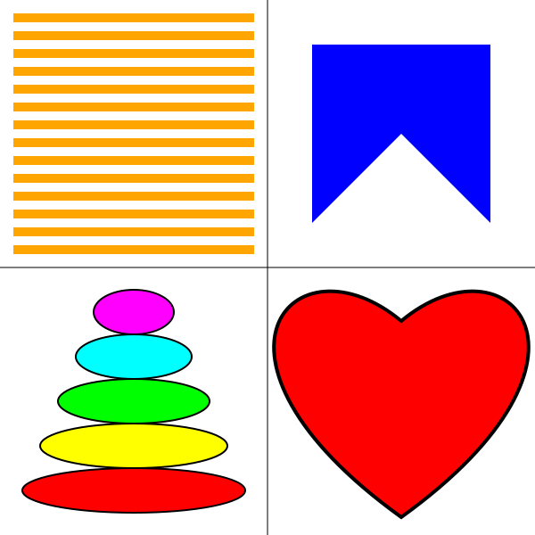

Lab 2: 2D Graphics with HTML Canvas
This lab consists of two exercises on drawing with the HTML canvas 2D graphics API, which was covered in Section 2.6. It requires some knowledge of JavaScript, which was covered briefly in Section A.3.
You will find the neccessary files on moodle for you to download. You can edit these files with any text editor like NotePad or VSCode.
Turning in your work: You will find on moodle 2 submission links, one for each of the following two tasks. You only need to submit the ".html" file. The files must have their original names, Lab2Ex1.html and Lab2Ex2.html.
For this lab, you should add appropriate comments to the new code that you write. And don't be this guy:

Exercise 1: Shapes
The file Lab2Ex1.html is a copy of the sample program GraphicsStarterPlus.html from the textbook, with the sample drawing code removed. For the first part of the lab, you should add new drawing code to the draw() function in Lab2Ex1.html to draw the following picture, including the dividing lines:

The heart can be drawn as a path made up of two Bezier curves. I suggest that you try making a heart in the Bezier curve demo from Section 2.2 to get some idea of where the control points need to be placed. It will take some experimentation to get the shape right!
The size of the canvas is 600-by-600. You can use the standard pixel coordinates, or you can apply a transformation to use a more convenient coordinate system. If you do the later, remember that line width is also transformed, and you will probably find it convenient to set the line width as a multiple of the global variable pixelSize. You also have the option of drawing the objects directly in world coordinates or using modeling transformations. In fact, I mostly just used plain pixel coordinates when I drew the picture.
The 2D graphics context in the program is named graphics. It has all the properties discussed in Section 2.6 of the textbook. In addition, the following non-standard drawing commands have been added to the graphics context:
graphics.strokeLine(x1,y1,x2,y2)— draw the line segment from (x1,y1) to (x2,y2).graphics.strokeCircle(x,y,r)— stroke the circle with center (x,y) and radius r.graphics.strokeOval(x,y,rx,ry)— stroke the oval with center (x,y), horizontal radius rx, and vertical radius ry.graphics.strokePoly(x1,y1,x2,y2,x3,y3,...)— stroke the polygon with vertices (x1,y1), (x2,y2), (x3,y3), ...graphics.fillCircle(x,y,r)— fill the circle with center (x,y) and radiusgraphics.fillOval(x,y,rx,ry)— fill the oval with center (x,y), horizontal radius rx, and vertical radius ry.graphics.fillPoly(x1,y1,x2,y2,x3,y3,...)— fill the polygon with vertices (x1,y1), (x2,y2), (x3,y3), ...
Exercise 2: Mousing
For the second exercise, you will work with Lab2Ex2.html, a program that implements mouse interaction. As it stands, the program draws a sequence of squares as the user drags the mouse on the canvas. You will add several additional drawing tools that respond to a mouse drag in different ways.
A drag action consists of a mouse down event, a sequence of mouse move events, and a mouse up event. The program defines functions to respond to these events. To implement the new tools, you will work mostly in the function doMouseMove(), which responds to mouse move events. You might also need to add something to doMouseDown(). Aside from implementing the tools, there are a few more things that have to be added to the program.
First, you should add a "Clear" button to the program. When the user clicks the button, the canvas should be filled with white. To do that, you need to add the HTML code for the button itself to the <body> of the web page. That takes the form
<button id="clearButton">Clear</button>
And you need to set up an event handler to respond to click events on the button. To do that, define a JavaScript function to clear the canvas. Then, as part of initialization, install it as the event handler using a command of the form
document.getElementById("clearButton").onclick = doClear;
where doClear is the name of the function.
Second, add at least one new color to the <select> element that creates the Color popup menu. Implement the new color by adding code to the doMouseMove function.
Third, add a new <select> element that will let the user select the drawing tool that they want to use, and implement that menu by adding code to the mouse-handling functions. This is the major part of the exercise. You should add at least four new tools. They must include:
- A tool similar to the original squares tool, except that it draws a non-trivial shape such as a star or a heart. (Non-trivial means that you need to create it as a path or polygon. In particular, not just circles or ovals.)
- A Curve tool that simply draws a line segment from the previous mouse position to the current mouse position. Note that the variables prevX and prevY are already defined to represent the previous mouse position.
- A tool that uses the starting position of the mouse, which is given by the variables startX and startY, as well as the current position. For example, draw a circle with center at the starting point and passing through the current position.
- One additional tool of your choice. (You might consider an "erase" tool that simply draws in white.)
Here, for example, is a drawing made with my completed version of the program, showing examples of four tools: